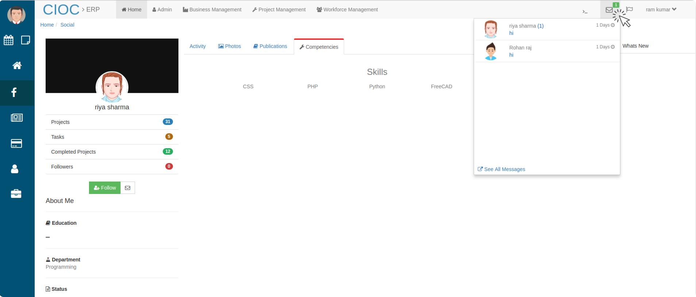
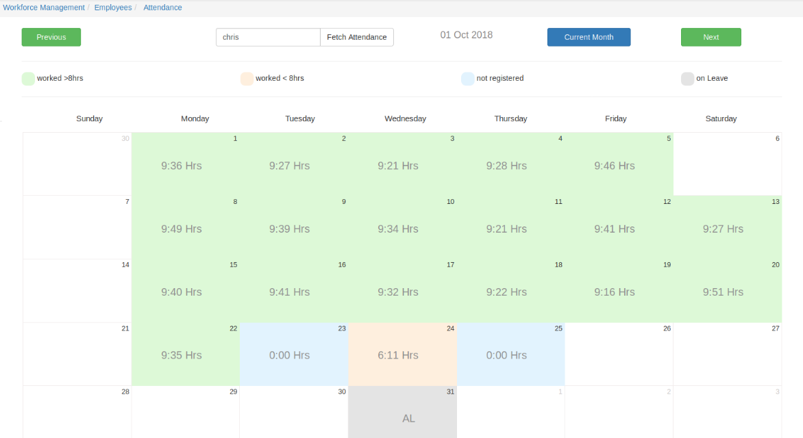

ERP’s HOME¶
Here
Home page of ERP system.
Above image is a view of Home Page which is representing the overall data in the form of graph by putting cursor over the graph you see data regarding that graph.
Graph representation.
In the Home page you can see the click icon, that is a search field for user to search their profile by their name i.e. @riya.
Searching User at home page.
From above image you will get idea that how to search user at home page.
User’s social profile¶
Check User’s profile & chat with them.
Form the above image you will come to know how to chat with user and how to check their profile. To check their profile click on social and for chat just click on chat. If you click on social you see the below view.
Check User’s profile & chat with them.
Above image is showing the view of user’s social profile.
- Here you can see their projects, tasks, completed projects, followers and you can follow them by clicking on Follow button.
- Here you will also come to know about user (About Me), their Department Education, Status, Their Contact Number
- And You can give them Feedback (by writing the feedback in feedback section and clicking on send icon). And you Feedback will be send to that user through their mail.
- You can share files too by clicking on attachment icon which is given in the footer section of chat tab.
By clicking Activity you can see all the post which is uploaded by that User.
User’s Activity.
On the above page you can like and comment on that user’s Post. And in the same way you can check their Uploaded Photos too.
User’s Published contents.
In the above tab you will see the User’s Published articles.
Check User’s Competencies.
To check user’s skills click on competencies and it will appear like in above tab.
Checking Messages
By clicking on message icon you will see the above message tab where you can see all the incoming and sent messages. Beside that message icon there is a Flag icon where you can see all the notifications.
Below that social icon (in the left hand side of home window) there is one card icon by clicking on that you will be direct to Expense claim tab.
Expense Claim¶
Check All Expense related data here.
Here in the above tab check and manage expenses
- In search tab you can search expense claims by their notes.
- If you want to create new Expense then click on New+ icon.
Note
- In the right hand side of the search bar there is some numeric buttons which is provided to change the pages of expense claims in the case of large number of data. By these buttons you can change these pages one by one, by clicking on next and previous buttons and there is refresh button too, to refresh that particular page instead of whole window.
Create a Expense¶
Creating Expense.
In the above tab
- Enter the Title of Expense. then
- Search and select the project name in which you have to attach
- Click on Save button to save the created expense. or if you have done some mistake and you want to reset the details then click on Reset button.
- In the right hand side of the search bar there is some numeric buttons which is provided to change the pages of expense claims in the case of large number of data. By these buttons you can change these pages one by one, by clicking on next and previous buttons and there is refresh button too, to refresh that particular page instead of whole window.
Expense Details¶
By clicking on I icon you can see all the details of that expense. like
Expense sheet.
By clicking on the title of that expense you will see the expense descriptions.
Expense details.
if you want to approve this expense make the toggle button on (green) else it will look like
Not approved.
Approve Expense
After changing the status of Approved (Yse/No) for that expense click on save Button to save the changes.
Edit Expense¶
By clicking on Pencil icon of expense you can edit that expense invoice. like
Edit expense.
- In the title field you will see the title of this expense which you had saved at the time of creation.
- And below that there is project in which you had attached this expense.
- you can change the name of expense but it will be related to that same project which you had mentioned while creating.
- If you want to delete this expense from this project click on delete icon and then it will ask for confirmation at that time click in Yes if you really want to delete this expense otherwise click on NO, if you will click on NO it will not be delete from there.
- In the Expense Title fill the Title for that expense related to that project.
- Enter the Amount and set the currency and
- Set the Date and upload the related File (receipt, invoice)
- Then Enter the GST Amount and GST IN, write some description if required and click on Add+ button and this expense will be updated in that project.
- and click on Save button to save the changes.
Profile¶
Profile.
By clicking on Profile You (user who is logged in) will see your own details like Employee ID, Email ID, Mobile, managers, Local Address, Permanent Address, Father’s name, Date of birth.
- And in the right hand side you can see your job related details like HRA, LTA, Basic, Policy Number, Joining Date, Pan No, Account Number etc.
- If you have some Complaints/Suggestions write it in Complaints/Suggestions area and click on done it will be send to your manager.
- If you want to check your Payroll Details click on Payslips button.
Payslips.
- In the above image you are seeing the payslips for January-2019.
- By clicking on Next and Prev you can change the year.
- If you want to see the payslip click on EYE icon it will show like above image.
- To download that payslip click on their Download icon and it will be downloaded in PDF format.
My Work¶
MY Work.
Above image represents My Work portal where you can check your work
- directly select the recent date to check your attendance it will show till the selected date.
- Use the Next and Prev button to change date and month.
- In the below table fill the work details like on which project you had worked, for how long you had worked write some details and
- Click on + icon to add the row in the table where you can fill the task done by you.
- Click on Save button to save the work details then
- click on submit button to submit the work details it will be Addressed By your Manager.
- In the right side top corner you can see your check in and checkout time.
- Before check in you will see a chicken button beside the attendance button, click on check in as you start working and at click on check out when you stop. it will count your working hours.
- To check the attendance click on attendance button it will show you attendance in below format.
Attendance.
Note
In this attendance sheet different different colors are showing different different status of work as you can see above. AL stands for (annual leave), ML (medical leave), CL(casual leave), Holidays etc
Like this you can keep a tight watch on your budget and resources and keep daily work report for all the projects.
Calendar¶
Calendar and their Features.
Above image is showing you the functionality of calendar, to go to the calendar portal click on calendar icon (left hand side upper corner in home page)
- Click on Today button to check today’s day and date.
- You can change the date by clicking on Next and Prev arrow button given beside the today button.
- you can change the month and year too for this calendar by clicking on month and year (drop down)Button.
- Check the checkbox(For meeting) if you want a reminder for meeting.
- Once meeting is over you can delete the set reminder and meeting reminder and alarm will be shown in that date cell of calendar.
- Click on + icon of calendar portal to set the reminders, Alarms, to-do and leave request.

how to set reminders for meeting.
- If you want to set the reminder for meeting click on Meeting then
- Write the Agenda of that meeting.
- You can Attach some related file too.
- You can set with whom you meeting in going to be.
- You can set the duration and place of meeting and
- You can set the priority too and this calendar will remind you at the set time with these information.
how to set reminders.
- Setting reminder is very easy just click on calendar icon the on + icon the above view then
- Write about the reminder.
- Set the date and time and click on submit button.
- If you want to rest the reminder click on Reset button.
- Similarly click on TO-DO to set the TO-DO and click on submit.
how to keep your leave details.
To keep the records of your leave go to leave request
- Select your leave type either it is medical leave(ML), Annual Leave(Al) or casual leave.
- Set the from date and to date.
- write the reason for leave.
- And click on Submit button to save the record
- If you want to rest the leave record click on reset button .